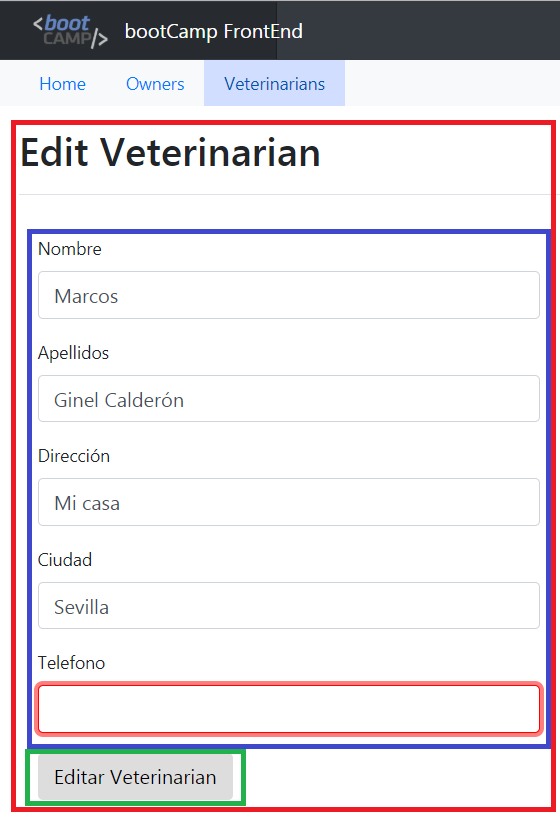

Reto bootCAMP
¡Bienvenido! Aquí tienes el reto que queremos que resuelvas. Recuerda que no es necesario que los hagas en ningún orden en concreto, ni siquiera debes entregarlo todo al completo, solo necesitamos que disfrutes y hagas todo lo que pedimos lo más completamente posible; si algo no puedes - sabes hacerlo, pasa a lo siguiente.
Estos son los requisitos a resolver:
-
Como ves en la siguiente imagen, nos gustaría que añadieses al listado de owners (hecho en el taller anterior) una nueva columna a mostrar que contenga para cada owner, el número de pets totales que posee. En la API REST podemos ver una petición al backend mediante el método GET y en su payload de respuesta podemos ver que cada owner viene con sus pets asociadas. La idea es que podamos ver como última columna (llamada Nº de mascotas) el número total de cada uno de los dueños
-
Ahora queremos que completes un CRUD para la pestaña de veterinarios; es decir, por ello queremos que se muestre algo así:
-
Como puedes ver, las tareas a hacer son:
- Añadir una tabla con la lista de veterinarios, mostrando el campo Name (donde van unidos el nombre y el apellido) y el campo Specialities (donde se muestran todas las especialidades, o la palabra 'none' si no tiene ninguna especialidad el veterinario)
- Haz que el buscador funcione como un filtro en cliente en tiempo real, es decir, que puedas escribir y si lo escrito "matchea" con algo del nombre, apellido o especialidad, sólo se vean esas filas coincidentes en pantalla
- Añade un botón "Crear nuevo" o con un icono de más (preferible) que al clickear sobre él navegemos a una nueva url para CREAR un veterinario nuevo (ver más abajo)
- Añade dos botones por fila que sirvan para editar un veterinario (nos llevará a la misma url que el paso anterior pero se pide más abajo hacerlo de manera distinta...) y otro para borrar esa entrada.
- Implementar el botón borrar, que hará una petición DELETE y borrará dicho veterinario de la base de datos, tras haberlo borrado, la lista se tiene que volver a pedir a backend (recargar los datos desde backend)
- Al clickear en borrar, intenta mostrar un popup de confirmación que avise al usuario de que está a punto de borrar un veterinario, si clickea en cancelar, no se hara nada; en caso de clickear en Aceptar, el usuario se borrará
-
Al clickear en el botón crear nuevo veterinario (ver ejercicios anteriores), iremos a otra pantalla donde se mostrará el formulario que se ve a continuación. Esta maquetación de campo por fila debe verse en modo pantalla movil (menor que 480px de ancho, por ejemplo).
- Creación de veterinarios
- Haz que se muestra este formulario que estás viendo más abajo.
- Los campos deben de tener una validación de REQUIRED (es decir, al menos se debe comprobar que no estén rellenos, mostrando un error como se ve en la imagen de más abajo (ver más abajo)
- Si el formulario no es válido, es decir, algún elemento no está relleno (required anterior), el botón Añadir veterinario DEBE estar desactivado (imposible clickear en él). Si todo es correcto, el botón Añadir veterinario debe habilitarse automaticamente y al clickear, el usuario creará un nuevo veterinario (metodo POST). En caso de éxito (backend crea al usuario), redireccionaremos automaticamente a la lista de veterinarios. Si backend diese un error, mostraremos un mensajito con dicho error y listo.
-
El formulario, en tamaños de ventana mayores de 480px, debería verse de la siguiente forma:
- Al clickear en el botón editar del listado de veterinarios, redireccionamos a la pantalla de creación/edición (puedes ver un ejemplo de campo no válido en rojo):
-
En este caso:
- Se verá el siguiente formulario (se valorará que sea el mismo componente de antes, aunque si necesitas dos distintos... hazlo)
- Los campos deben de estar PRERELLENADOS con la información del veterinario seleccionado
- Si algún campo no fuese válido (required), el botón editar veterinario deberia estar desactivado. En caso de estar activo (el formulario es válido), al hacer click ejecutaremos una llamada a backend (metodo PUT) para editar dicho veterinario
